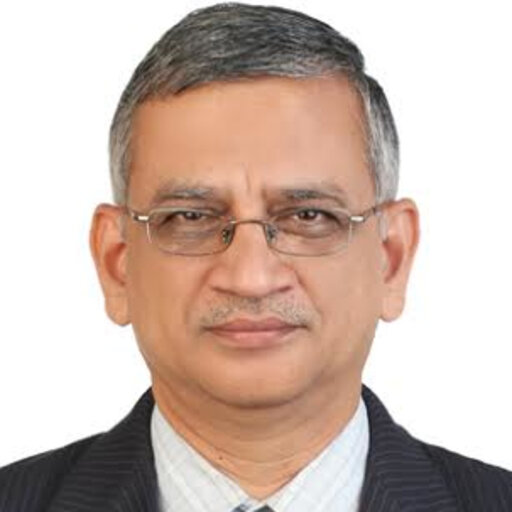
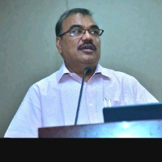
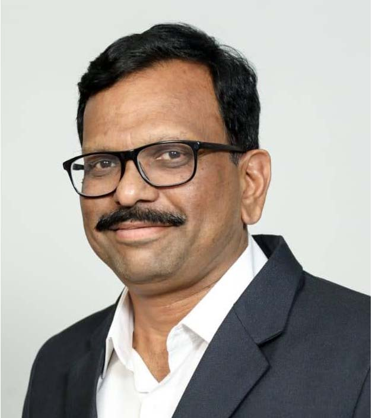
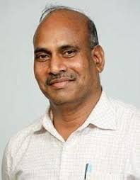
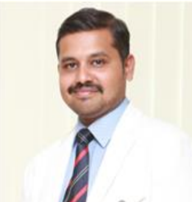
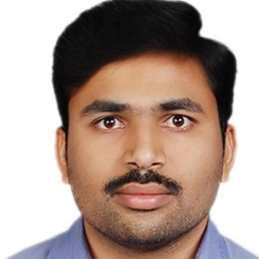
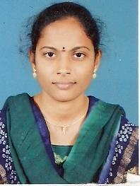

AICTE-Vibrant Advocacy for Advancement and Nurturing of Indian Languages (VAANI)
చైతన్య భారతీ సాంకేతిక సంస్థ (అ) ఎలక్ట్రానిక్స్ మరియు కమ్యూనికేషన్ ఇంజినీరింగ్ విభాగం, హైదరాబాద్- 500 075 CHAITANYA BHARATHI INSTITUTE OF TECHNOLOGY(A) DEPARTMENT OF ECE, HYDERABAD- 500 075
ఇంజినీరింగ్లో ఉదయించుతున్న ప్రవణతలపై ప్రాంతీయ సదస్సు (ఆర్సీఈటీఈ) Regional Conference in Emerging Trends in Engineering(RCETE)
About the Conference
ఆర్సీఈటీఈ 2025 రెండు రోజుల ప్రాంతీయ సదస్సు, ఇది సీబీఐటీ హైదరాబాద్ నిర్వహిస్తోంది. ఈ సదస్సు ఏఐసీటీఈ-వాణి (AICTE-VAANI) పథకం కింద తెలుగులో సాంకేతిక విద్యను ప్రోత్సహించడంపై దృష్టి సారిస్తోంది.
ఈ సదస్సును సీబీఐటీ హైదరాబాద్లోని ఎలక్ట్రానిక్స్ మరియు కమ్యూనికేషన్ ఇంజినీరింగ్ విభాగం ద్వారా, అఖిల భారత సాంకేతిక విద్యా మండలి (AICTE) మరియు వాణి భాగస్వామ్యంతో నిర్వహించబడుతోంది.
ఈ కార్యక్రమం ద్వారా పరిశోధకులు, నిపుణులు మరియు విద్యార్థులను ఒకే వేదికపైకి తీసుకురావడమే లక్ష్యం, తద్వారా ఇంజినీరింగ్లో వృద్ధిపొందుతున్న సాంకేతికాంశాలపై చర్చలు జరుగుతాయి. ఈ క్రింది నాలుగు ప్రత్యేక ట్రాక్లను నిపుణుల నేతృత్వంలో నిర్వహించబడతాయి:
-స్వయంచాలిత నావిగేషన్
-ఆరోగ్యరంగంలో కృత్రిమ మేధస్సు (AI)
-సెన్సార్ నెట్వర్క్లు
-5G / 6G కమ్యూనికేషన్
ఈ సదస్సు 2025 నవంబర్ 14–15 తేదీలలో జరుగుతుంది. దీనివల్ల ప్రాంతీయ భాషలలో పాల్గొనడాన్ని ప్రోత్సహిస్తూ, పరిశ్రమ-విద్యా సంస్థల మధ్య సహకారాన్ని పెంపొందించడంతో పాటు జ్ఞానాన్ని పంచుకునే వేదికగా నిలుస్తుంది. ఎంపికైన పరిశోధనా పత్రాలను ISBN నంబర్తో అధికారిక ప్రాసీడింగ్స్లో ప్రచురించబడతాయి.
RCETE 2025 is a two-day regional conference hosted by CBIT Hyderabad under the AICTE-VAANI scheme, focused on promoting technical education in Telugu.
The conference is organized by the Department of Electronics and Communication Engineering, CBIT Hyderabad, in collaboration with the All India Council for Technical Education (AICTE) and the Vaani initiative.
The event aims to bring together researchers, professionals, and students to discuss emerging technologies in engineering through four expert-led tracks:
-Autonomous Navigation
-AI in Healthcare
-Sensor Networks
-5G/6G Communication
Held on 14–15 November 2025, the conference encourages regional language participation, industry-academia collaboration, and knowledge-sharing. Selected papers will be published with an ISBN in the official proceedings.
Conference Schedule
ఈ సదస్సులో ముఖ్య అతిథుల ప్రసంగాలు, ప్యానల్ చర్చలు మరియు నాలుగు ట్రాక్లలో సాంకేతిక సెషన్లు ఉంటాయి.
వివరమైన షెడ్యూల్ ఈవెంట్ తేదీ సమీపంలో ప్రకటించబడుతుంది.
రోజు 1 – 14 నవంబర్ 2025
ఉదయం: స్వయంచాలిత నావిగేషన్ మరియు నియంత్రణ వ్యవస్థలు-(ప్రొఫెసర్ ఎ.డి. శర్మ)
మధ్యాహ్నం: ఆరోగ్య సంరక్షణ మరియు బయోమెడికల్ ఇంజినీరింగ్లో కృత్రిమ మేధస్సు-(డా. ఎన్. జగన్ మోహన్)
రోజు 2 – 15 నవంబర్ 2025
ఉదయం: సెన్సార్ నెట్వర్క్లు మరియు తక్షణ డేటా విశ్లేషణ-(శ్రీ పి. రాఘవేంద్ర రావు)
మధ్యాహ్నం: 5G/6G మరియు భవిష్యత్తు వైర్లెస్ కమ్యూనికేషన్-(శ్రీ టి.వి. ప్రకాష్ రావు)
The conference will feature keynote speeches, panel discussions, and technical sessions across the four tracks.
Detailed schedule will be available closer to the event date.
Day 1 - 14th November 2025
Morning: Autonomous Navigation and Control Systems (Prof. A.D. Sarma)
Afternoon: AI in Healthcare and Biomedical Engineering (Dr. N. Jagan Mohan)
Day 2 - 15th November 2025
Morning: Sensor Networks & Real-Time Data Analysis (Sri P. Raghavendra Rao)
Afternoon: 5G/6G and Future Wireless Communication (Sri T.V. Prakash Rao)
Featured Speakers

ప్రొఫెసర్ ఎ.డి. శర్మ
ప్రొఫెసర్, సీబీఐటీ హైదరాబాద్
స్వయంచాలిత నావిగేషన్ మరియు నియంత్రణ వ్యవస్థలు
Prof. A.D. Sarma
Professor, CBIT Hyderabad
Autonomous Navigation and Control Systems
డా. ఎన్. జగన్ మోహన్
ఏఐ పరిశోధకుడు, Spicarts.ai
ఆరోగ్య సంరక్షణ మరియు బయోమెడికల్ ఇంజినీరింగ్లో కృత్రిమ మేధస్సు
Dr. N. Jagan Mohan
AI Researcher, Spicarts.ai
AI in Healthcare and Biomedical Engineering
శ్రీ పి. రాఘవేంద్ర రావు
మాజీ సహాయ డైరెక్టర్, CHESS DRDO
సెన్సార్ నెట్వర్క్లు మరియు తక్షణ డేటా విశ్లేషణ
Sri P. Raghavendra Rao
Former Assoc. Director, CHESS DRDO
Sensor Networks & Real-Time Data Analysis
శ్రీ టి.వి. ప్రకాష్ రావు
శాస్త్రవేత్త జి, DRDO (రిటైర్డ్)
5G/6G మరియు భవిష్యత్తు వైర్లెస్ కమ్యూనికేషన్
Sri T.V. Prakash Rao
Scientist G, DRDO (Retd)
5G/6G and Future Wireless Communication
Organizing Committee
శ్రీ ఎన్. సుభాష్
ప్రధాన పాలకుడు సీబీఐటీ అధ్యక్షుడు
Sri. N. Subash
Chief Patron President, CBIT

ప్రొఫెసర్ సి.వి. నర్సింహులు
పాలకుడు ముఖ్యాధ్యాపకుడు, సీబీఐటీ
Prof. C. V. Narsimhulu
Patron Principal, CBIT
ప్రొఫెసర్ ఎ.డి. శర్మ
సలహా సమితి సలహాదారు, R&D, సీబీఐటీ
Prof. A. D. Sarma
Advisor committee Advisor, R&D, CBIT

ప్రొఫెసర్ ఎన్.వి. కోటేశ్వరరావు
సలహా సమితి నిర్దేశకుడు, IQAC, సీబీఐటీ
Prof. N. V. Koteswara Rao
Advisor Committee Director, IQAC, CBIT

డా. డి. కృష్ణ రెడ్డి
సలహా సమితి నిర్దేశకుడు, R&D, సీబీఐటీ
Dr. D. Krishna Reddy
Advisor Committee Director, R&D, CBIT

డా. కె. వసంత్
సలహా సమితి విభాగాధిపతి, ECE విభాగం, సీబీఐటీ
Dr. K. Vasanth
Advisor Committee HoD, ECE Department, CBIT

డా. టి. శ్రీధర్
సంఘటకుడు అసిస్టెంట్ ప్రొఫెసర్, ECE, సీబీఐటీ
Dr. T. Sridher
Coordinator Assistant Professor, ECE, CBIT

డా. డి. నాగదేవి
సహ-సంఘటకురాలు అసిస్టెంట్ ప్రొఫెసర్, ECE, సీబీఐటీ
Dr. D. Nagadevi
Co-Coordinator Assistant Professor, ECE, CBIT
AICTE Approval
ఇంజినీరింగ్లో ఏర్పడుతున్న ఆధునిక ప్రవణతలపై ప్రాంతీయ సదస్సు (ఆర్సీఈటీఈ) 2025 కు అఖిల భారత సాంకేతిక విద్యామండలి (ఏఐసీటీఈ) ద్వారా వాణి పథకం కింద అధికారిక ఆమోదం లభించింది. ఈ వాణి (భారతీయ భాషల అభివృద్ధి మరియు ప్రోత్సాహానికి సమగ్ర ఉద్యమం) పథకం దేశీయ భాషలలో, ముఖ్యంగా ప్రాంతీయ స్థాయిలో సాంకేతిక విద్యను అభివృద్ధి చేయడాన్ని లక్ష్యంగా పెట్టుకుంది.
సీబీఐటీ, హైదరాబాద్ ఈ సదస్సును తెలుగులో నిర్వహించే సంస్థగా ఎంపికైంది. ఇది సాంకేతిక విద్యా పరంగా భాషా సమానత్వాన్ని, స్థానిక భాషల్లో నైపుణ్యాభివృద్ధిని ప్రోత్సహించడాన్ని సూచిస్తుంది.
ఈ ఆమోదం ద్వారా, విద్యా సమానత్వాన్ని బలోపేతం చేయడంలో ఏఐసీటీఈ తీసుకుంటున్న చర్యలకు ఇది నిదర్శనం. ప్రాంతీయ భాషలలోనూ, సాంకేతిక రంగాలలోనూ నైపుణ్యాలను అభివృద్ధి చేయడం, పరిశ్రమ-విద్యా సంస్థల భాగస్వామ్యాన్ని మెరుగుపరచడం ఈ సదస్సు ముఖ్య ఉద్దేశాలు.
ఏఐసీటీఈ ఆమోదానికి ముఖ్య సమాచారం:
✅ పథకం పేరు: వాణి – 2025–26
✅ ప్రాధాన్యతా రంగం: అంతరిక్ష మరియు రక్షణ
✅ బోధన భాష: తెలుగు
✅ మాధ్యమం: ప్రత్యక్ష (ఆఫ్లైన్) సదస్సు
✅ ఆమోద తేది: 2025 జూన్ 20
✅ లేఖ సంఖ్య: 2423922453
ఈ ఆమోదంతో సీబీఐటీ బహుభాషా విద్య, ఆధునిక సాంకేతికతలపై చర్చలు మరియు పరిశ్రమ-విద్యా రంగాల మధ్య మైత్రిని ప్రోత్సహించే జాతీయస్థాయి సదస్సును విజయవంతంగా నిర్వహించగలుగుతుంది. ఎంపికైన పరిశోధనా పత్రాలు అధికారిక ప్రచురణలలో ISBN నెంబర్తో ప్రచురించబడతాయి, తద్వారా విద్యావేత్తలకు గౌరవనీయమైన గుర్తింపు లభిస్తుంది.
The Regional Conference in Emerging Trends in Engineering (RCETE) 2025 has been officially approved by the All India Council for Technical Education (AICTE) under the VAANI (Vibrant Advocacy for Advancement and Nurturing of Indian Languages) scheme. This initiative supports the development and delivery of technical education in Indian languages, particularly in regional contexts.
CBIT Hyderabad has been selected to conduct this event in Telugu, promoting linguistic inclusion in technical discourse.
The approval signifies AICTE's commitment to enhancing educational equity while supporting domain-specific knowledge sharing in native languages.
key Details of the AICTE Approval:
✅ Scheme Name: AICTE-VAANI 2025–26
✅ Thrust Area: Space and Defense
✅ Language of Delivery: Telugu
✅ Mode: Offline Conference
✅ Approval Date: 20th June 2025
✅ Letter Number: AICTE/VAAN1/2.0/2025-26/185/2423922453
This approval enables CBIT to organize a national-level conference that integrates multilingual education, emerging technologies, and industry-academia collaboration. Selected research papers will be published in official proceedings with an ISBN number, encouraging scholarly recognition and wider dissemination.
సంప్రదించండి Contact Us
సంఘటకుడు: డా. టి. శ్రీధర్ – 8801206497 – tsridhar_ece@cbit.ac.in
సహ-సంఘటకురాలు: డా. డి. నాగదేవి – 9704111749 – dnagadevi@cbit.ac.in